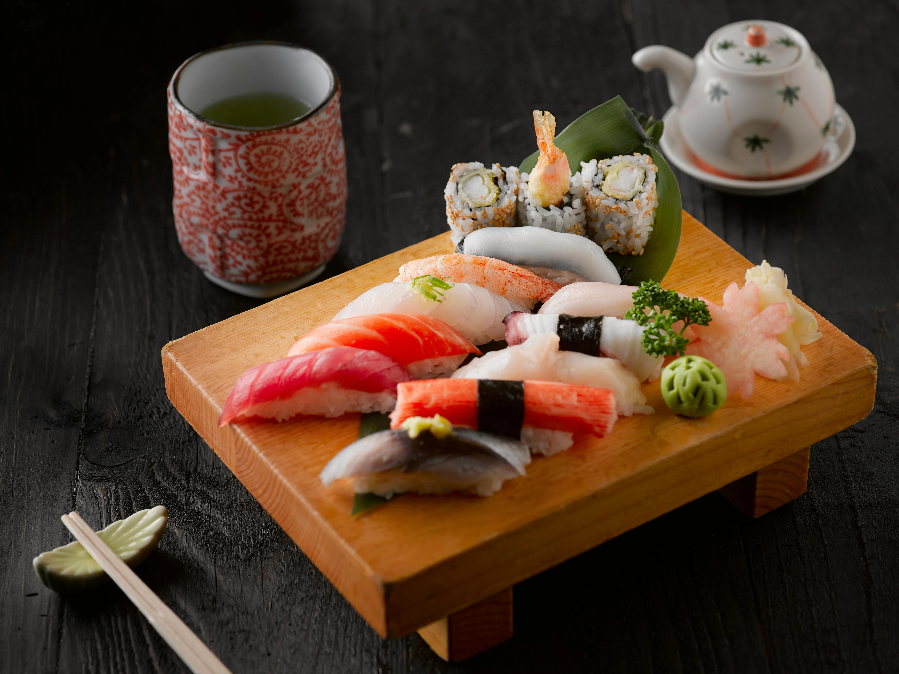
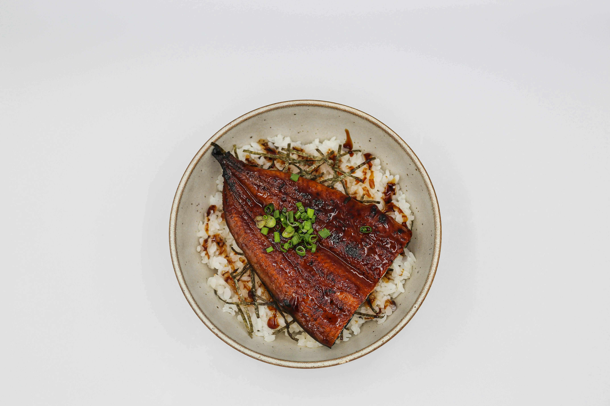
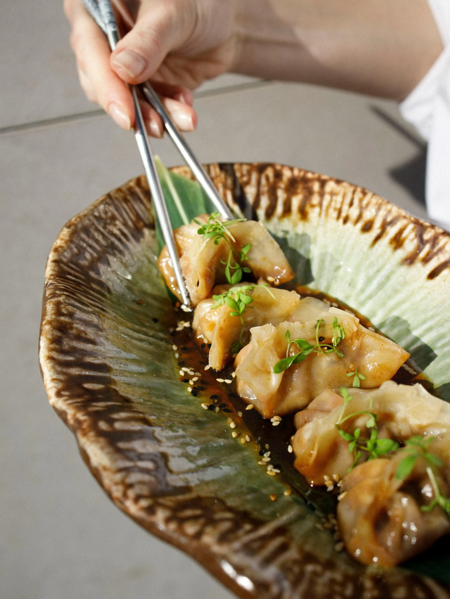
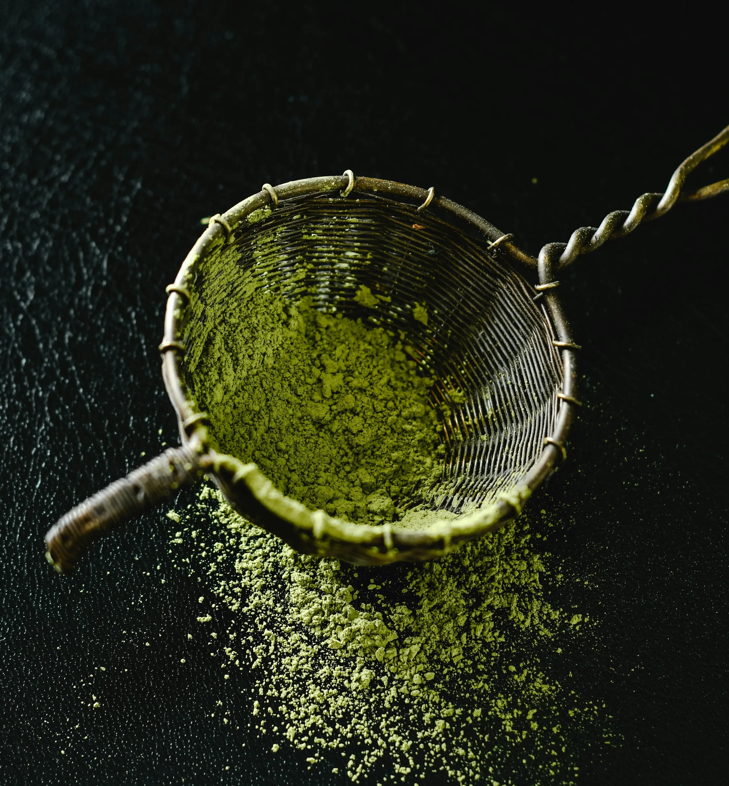
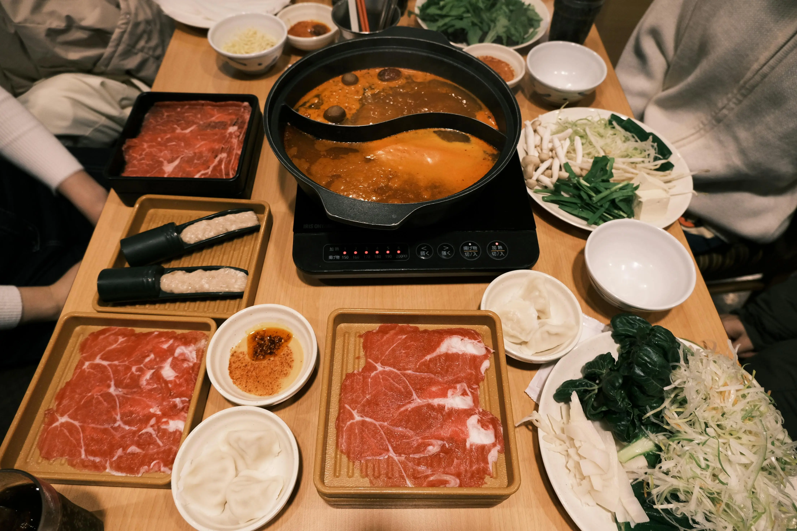

History of Food in Tokyo
In the 9th century, grilled fish and sliced raw fish were widely popular. Japanese people who could afford it would eat fish at every meal; others would have to make do without animal protein for many of their meals. In traditional Japanese cuisine, oil and fat are usually avoided within the cooking process, because Japanese people were trying to keep a healthy lifestyle.
I love Tokyo. If I had to eat only in one city for the rest of my life, Tokyo would be it. Most chefs I know would agree with me.
- Anothony Bourdain